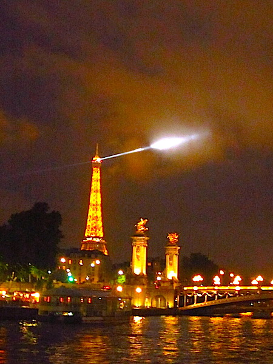
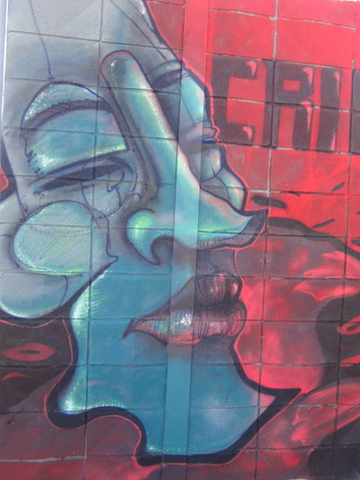
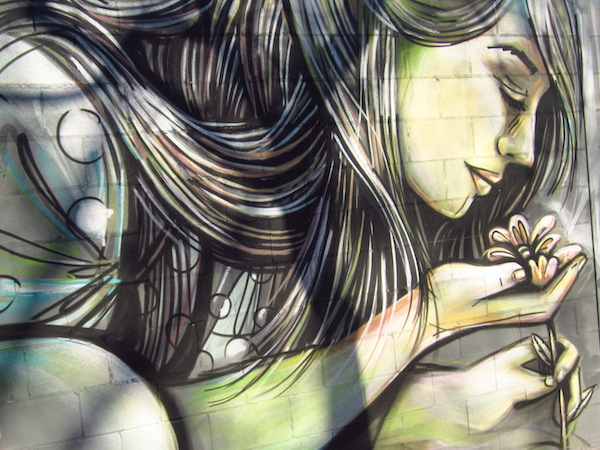
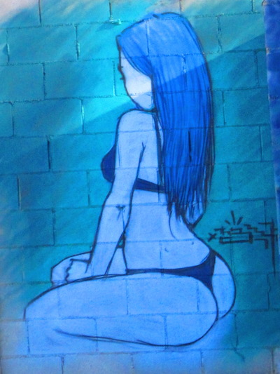
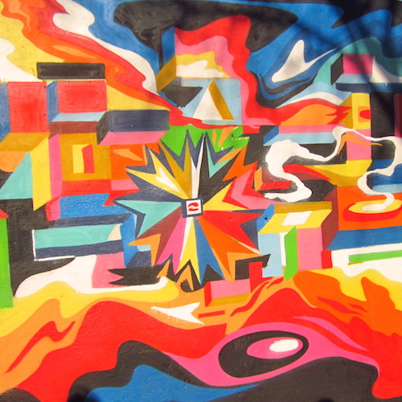

Thunderstorm: 1, Americans: 0
At the end of my semester abroad in June, 2012, I found myself in Paris with a college friend named Vincent who was just finishing up his semester in Vienna, a high school friend named Petra with a few weeks between prestigious engineering internships, and a guy our age we had just met at our hostel named Sanjay, who was doing a summer biology internship in Grenoble.
Our hostel was ridiculous.
Other than the price, nothing about it was right. It was a couple miles from the nearest train station, outside the Boulevard de Périphérique, the highway that surrounds the main part of Paris, and absurdly, the reception was a 10-minute shuttle ride from the actual rooms. And we four caught the last shuttle at 9pm.
Despite having travelled for hours that day, I was eager to head to the Eiffel Tower and share a bottle of wine with my friends in front of its every-hour-on-the-hour light show. [show my friends the way it sparkled every hour on the hour at night. I had seen it for the first time a couple months earlier when I celebrated one of my friend's 21st birthday with her underneath the Eiffel Tower with her, other students in our program, and a lot of champagne. And I decided right then and there that it was one of the most magical sights in the world and I wanted to share it with everyone that I could.
So we headed off on line 11 of the Parisian metro system toward the center of town around 11, and Vincent was starving, so we stopped at a French restaurant across the Seine from the Eiffel Tower. This is where three things went awry: 1. Vincent wanted a hamburger, not a bœuf bourgignon, bouillabaisse, or any number of french dishes on the menu. 2. After seeing Vincent pay 15 euro for a single burger, the rest of us decided that we weren't really that hungry after all and didn't even order drinks. And 3. we were all Americans. Three strikes and you're out.
Hoping to prevent anyone from spitting in Vincent's burger, I struck up a conversation with a waiter on his smoking break in French. And, I know a lot of Americans who are disenchanted with Parisian attitudes would cringe at this misguided attempt to mend bridges, but my French is good. I'm not bragging: after 10 years of study and 6 months living in a French family and taking classes solely in French, I've achieved "good" status.
[more awkward restaurant story: our server came out with Vincent's burger, saw me chatting with the other guy, joined in, flirted a little, and was a lot warmer to us after that.]
So, minority redeemed, we headed to the Eiffel Tower, bottle of wine in hand.
Since it was a lovely night in June, the green in front of the Eiffel Tower was filled with groups of teens and young adults from all over the world, in varying states of sobriety. But no matter their distraction with cheap wine or cheesy guitar covers, everyone cheered when the lights of the Eiffel Tower danced down at us for their 1am show. Thoroughly content, the four of us sat passing our bottle of Alsacian white for another half hour before heading to look for the metro.
Here was the problem: we couldn't find metro. We were poor college students spending time abroad, we all had the cheapest phones money could buy and their corresponding pay-as-you-go plans, none of which include gps. Unfortunately, they were also all relying on my knowledge of Paris to get us back, and my sense of direction couldn't direct me out of a galérie lafayette bag.
Long story short: the last metro left. Without us.
Now, exhausted, we trudged along deserted Parisian streets, pausing frequently at bus stops to orient us and feeling distinctly sorry for ourselves and our poor aching feet who still had a week and a half of work to do.
It couldn't get any worse, right?
Hah. Ha ha. Hah.
Most of our little promenade was overseen by an overcast sky, which we really couldn't complain about, since it lent our trip more light. But then, around 4 in the morning, it started drizzling. At first, just a little poke here and there, reminding us unnecessarily just how foolish we were to not have paid more attention to time, but these little pokes quickly passed the obnoxious little brother stage and grew more and more and more insistent until a clap of thunder stopped us dead in our tracks.
Crap.
I don't know if you've ever experienced the first wave of a thunderstorm, but it's really just the weather mocking you. We got the picture from the air booming and the sky illuminating, but no, we had to watch the leading edge of rainfall race down the street toward us, the air so thick with precipitation that we could barely see through it. We raced down the street to take shelter under an awning, where we unanimously agreed it was time to cave and grab a taxi.
There was just one problem: remember how I said our hostel's reception was nowhere near our rooms? The only address we had was for reception. So, when we finally flagged down a taxi (I say "we." Actually, Vincent and Sanjay acted the gentlemen and braved the rain to get all of us a taxi. Who ever said chivalry was dead?), all he saw were drenched, exhausted, hopelessly lost americans who could only tell him an address where our rooms weren't and a vague description of where the nearest metro stop was.
This isn't to say that the taxi ride wasn't helpful. If anything, it allowed us a tiny period of respite from the thunderstorm outside, and by the time we got out, marginally closer to our destination, it was only drizzling. By now, we were too close to our rooms for the vague directions we took from bus stops during our whole trip, so we were just dragged our feet down random block after random block until finally, at about 5 in the morning, we recognized a little street that led to the metro stop where we'd started this whole adventure and we followed the breadcrumbs all the way back to our bunkbeds.
I don't know about my friends, but I passed out sometime between peeling off my wet clothes and my head hitting the pillow.